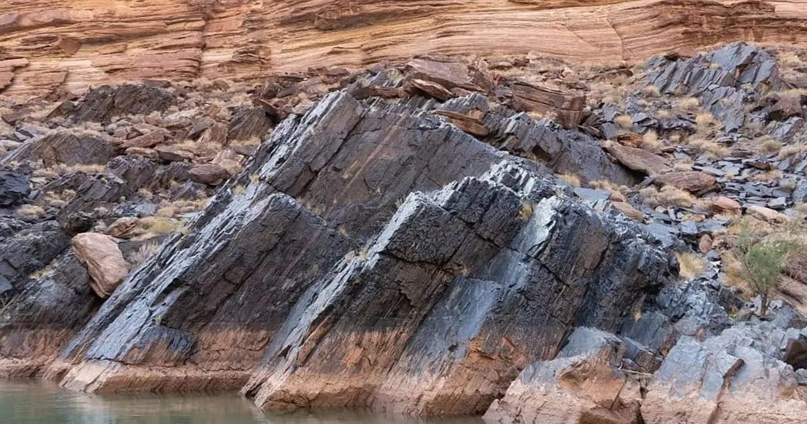

Великое несогласие: что скрывает миллиард лет истории Земли
Геологи давно ломали головы над пропастью в хронологии планеты — слои пород, возрастом более миллиарда лет, просто отсутствуют во многих регионах. Новое исследование указывает на глубокие мантийные процессы как возможную причину этого глобального разрыва.
Загадка пропавших слоев
В геологическом разрезе Земли существует явление, получившее название Великое несогласие: на старых кристаллических основаниях лежат молодые осадочные породы, а весь промежуточный интервал в миллиард лет отсутствует. Этот пробел прослеживается на разных континентах, от Гранд-Каньона до Сибири, что говорит о планетарном масштабе события.
Долгое время основной гипотезой считалось масштабное эродирование: поднявшиеся блоки коры долго размывались ветром и водой, снося верхние слои в океан. Однако равномерность и синхронность пропажи пород на огромных площадях заставляли сомневаться в исключительной роли поверхностных процессов.

Роль мантийной динамики
Авторы работы обратили внимание на связь между временем несогласия и этапами суперконтинентального цикла. Разрушение древнего континента Родиния сопровождалось мощным подъёмом мантийных плумов, которые нагревали и поднимали литосферу, ускоряя эрозию и предотвращая накопление новых осадков.
Моделирование показало, что термическое расширение литосферы могло создать условия для одновременного денудации на огромных площадях. Это объясняет, почему несогласие выглядит как единая глобальная поверхность, а не как набор локальных разрывов разного возраста.

Геохимические следы процесса
Дополнительные аргументы дают данные по изотопному составу цирконов и полевых шпатов из пород, обрамляющих несогласие. Они фиксируют резкое изменение условий плавления мантии и составов магматических расплавов именно в интервале 700–500 миллионов лет назад.
Такая синхронность геохимических сигналов и стратиграфического разрыва укрепляет гипотезу о глубоком, мантийном триггере. Поверхностные факторы — климат, ледники, уровень океана — скорее усиливали уже запущенный тектоническим подъёмом процесс размывания.
Что остаётся нерешённым
Несмотря на убедительную модель, точные механизмы синхронности эрозии на разных широтах и в разных климатических зонах требуют уточнения. Важно понять, как мантийный подъём координировался с глобальными климатическими переворотами неопротерозойской эпохи.
Будущие работы с высокоточной геохронологией и палеомагнетизмом помогут восстановить палеогеографию моментов подъёма и оценить вклад тектоники и климата в создание самого заметного пробела в каменной летописи планеты.
Что обсудить с геологом перед полевой работой
Прежде чем отправляться на поиск следов «Великого несогласия» в натуре, стоит проконсультироваться с профессиональным геологом или гидом, знающим структуру местных разрезов. Исходный текст подчёркивает, что феномен проявляется по-разному в зависимости от мантийной динамики и истории поднятия блоков, поэтому без понимания регионального контекста легко принять обычную эрозионную несостыковку за глобальный пробел. Подготовка включает изучение геологических карт, получение допусков к карьерам или охраняемым территориям, а также подбор оборудования для фиксации контактов пород: фотоаппарата, компаса, маркера масштаба и полевого журнала.
Такой «процедуре», как самостоятельный полевой разбор сложных разрезов, противопоказаны люди без базовой геологической подготовки и с проблемами опорно-двигательного аппарата: работа часто требует передвижения по осыпям, крутым склонам и нестабильным карьерным стенам. Результат — качество собранных наблюдений и фотодокументации — зависит от погодных условий, освещённости выемки, степени выветривания пород и умения исследователя отличать тектонические разломы от первичных осадочных контактов, о чём свидетельствуют новые геохимические данные о сложности процесса.
Коротко: Великое несогласие — это не просто результат эрозии, а следствие глобальной перестройки мантии и литосферы в эпоху распада суперконтинента Родиния. Глубинные процессы задали ритм, а поверхностные факторы довели размывание до планетарного масштаба.
Какое геологическое явление вам кажется самым загадочным в истории Земли?